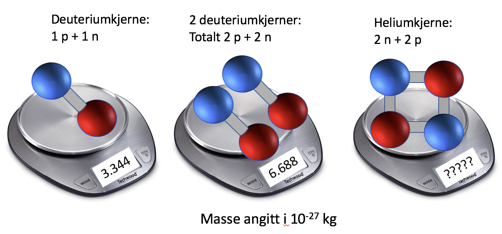
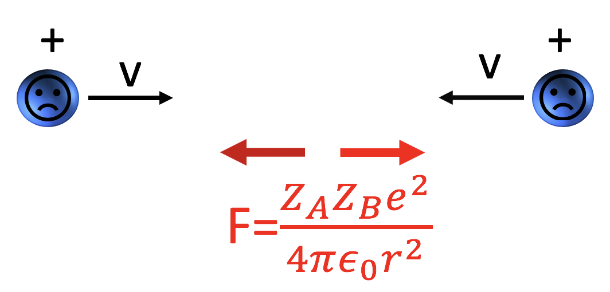
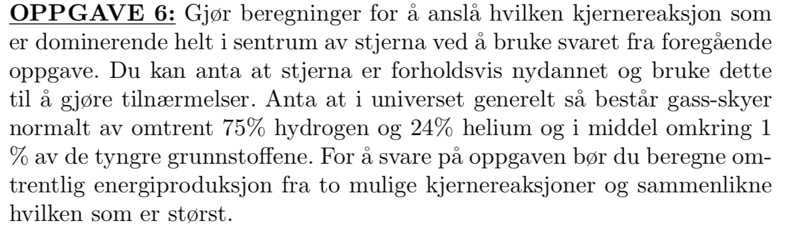

Du må bruke presentasjonsmodus/fullskjermsvisning for å lese denne, men du skal ikke bruke frem/tilbake-knappene, KUN knappene som dukker opp på sliden for å ta deg videre! Ofte må du laste filen ned til maskinen din og åpne den der for å få til dette. Merk at noen knapper vil åpne nettskjema, videoer eller andre ressurser i internettbrowseren din. Når du gjør det riktig, skal du kun se en side av gangen, og når du trykker på knappene som dukker opp på skjermen så skal disse ta deg frem/tilbake i dokumentet. Du vil miste mye læringsutbytte hvis du ser flere slides av gangen. Får du det ikke til, spør foreleser/gruppelærer!
Dette er en erstatning for forelesningen i emnet. Har du gått skikkelig gjennom disse interaktive forelesningsnotatene så trenger du ikke å lese de fulle forelesningsnotatene (med unntak av oppgavene bak). All informasjonen du trenger, får du her. Du kommer til å få mange grublespørsmål og diskusjonsoppgaver, det er meningen at disse skal gjøres i grupper av minst 2, maks 4 studenter. Det er defor sterkt anbefalt at dere sitter sammen i grupper når dere går gjennom disse interaktive forelesningsnotatene, du vil få betydelig mer utbytte av dem på den måten. En god ide kan være å bli enige om å treffes til den faste forelesningstiden og bruke forelesningslokalet som kommer til å være resevert til dette. Hvis du har kommentarer ris/ros til disse forelesningsnotatene eller til emnet, trykk på 🙂 🙁 knappen som du finner på alle sider.
HUSK at du får mer ut av de interaktive forelesningsnotatene når du gjør de sammen med noen. Diskusjonene med andre er svært viktige.
Det er mange spørsmål/grubliser underveis, sett dere selv en tidsgrense, 1-2 minutter på de korte, 4-5 minutter på de lenger. Ha en alarm ved siden av, ellers kommer dere til å bruke alt for langt tid. Har dere ikke fått det til etter 5 minutter, gå videre, se svaret og lær!
Er du i det minste tvil om noe, så finnes det nå en PADLETknapp, trykk det og still spørsmål med en gang mens du enda husker spørsmålet!
Forrige side Velkommen til del 3C! I denne delen av kurset skal du lære å regne på kjernereaksjoner. Du skal finne ut hvordan vi, basert på temperatur, tetthet og sammensetningen av kjernen til en stjerne kan beregne dens luminositet. (Illustrasjon: NASA)Neste side
Forrige side🙂 🙁KjernemasserPADLET Du vet sannsynligvis allerede at det som produserer energien i de fleste stjerner er at 4 hydrogenkjerner (som består av et proton hver), smelter sammen til en heliumkjerne (som består av 2 protoner og 2 nøytroner). Men hvorfor blir det skapt energi når disse kjernene slåes sammen? Jeg har tenkt litt på dette nå og tror jeg har et svar...
Forrige side🙂 🙁KjernemasserPADLET AhA! Opplagt! Vi ser at 2 av protonene her blir omgjort til nøytroner som har mindre masse enn protoner, og denne masseforskjellen blir omgjort til energi via Einsteins uttrykk E = mc2 (som vi kommer tilbake til og skal utlede senere i kurset) Ja, selvsagt, den kjøper jeg! Nei, jeg tror ikke det kan stemme!
Forrige side🙂 🙁KjernemasserPADLET Er du såååå lettlurt enda? Har du ikke lært å ane fellene etter så mange interaktive forelesningsnotater? Nøytronene er jo selvfølgelig tyngre enn protonene, de trenger energi for å dannes!Neste side
Forrige side🙂 🙁KjernemasserPADLET Deg var det jammen ikke lett å lure i en felle! Du har vel kanskje begynt å ane fellene før de kommer? Du har helt rett, her var det noe galt! Nøytronene er jo selvfølgelig tyngre enn protonene, de trenger energi for å dannes! Neste side
Forrige side🙂 🙁KjernemasserPADLET EEEhhhmmmmmm, OK? Heliumkjernen består av partikler som veier mer enn i de 4 hydrogenkjernene til sammen. Likevel skapes det energi i fusjonen? Hvor kommer denne fra? Tja...
Forrige side🙂 🙁KjernemasserPADLET
La oss putte noen atomkjerner på kjøkkenvekta vår: 
Hadde bare noen rester i kjøleskapet, et par deuteriumkjerner og en heliumkjerne, det får duge! Deuterium er en isotop av hydrogen som har et proton og et nøytron i kjernen. Først måler vi en deuteriumkjerne, deretter to sammen og til slutt en heliumkjerne som består av nøyaktig det samme som to deuteriumkjerner. Hva tror du den siste vekte viser?
Forrige side🙂 🙁KjernemasserPADLET OG svaret er:
Hæææææ! Vi har nøyaktig de samme partiklene på den midterste og siste vekt, likevel veier de forskjellig? Nøyaktig hvorfor skal vi komme tilbake til i relativitetsteorien i del 2. Men i relativitetsteori så er energi inkludert i masseregnskapet, energi som kinetisk og potensiell bidrar til masse. Dermed er masse ikke en additiv størrelse i relativitetsteori.Neste side
Forrige side🙂 🙁KjernemasserPADLET OG svaret er:
Det er ingen enkel sammenheng mellom hvilke og hvor mange kjernepartikler vi har og massen til atomkjernen, det avhenger bl.a. av bindingsenergier (sterk kjernekraft) i atomkjernen. Det enkleste vi kan gjør er å snakke om masse per nukleon, dvs. vi tar totalmassen og deler på antall nukleoner (=protoner og nøytroner). Da får vi et mål for midlere masse til en kjernepartikkel. Neste side
Forrige side🙂 🙁KjernemasserPADLET
Vi ser av figuren at midlere masse per atomkjerne altså er mindre i helimkjernen enn i deuteriumkjernen. Det betyr at hvis vi hadde klart å fusjonere to deuteriumkjerner til en heliumkjerne så ville vi fått energi til overs, denne overflødige massen ville blitt omgjort til energi (kinetisk og/eller stråling). For å vite om energi frigjøres i en kjernereasjon (fusjon eller fisjon) så må vi altså se på masse per nukleon før og etter prosessen. Er den mindre etter blir det frigjort energi. Neste side
Figuren viser en skisse av grafen for nukleontall (antall nukleoner i en atomkjerne) på x-aksen og masse per nukleon på y-akse. Vi ser at masse per nukleon faller kraftig fra Hydrogen og til tyngre grunnstoffer. Men kun frem til jern (Fe). Deretter øker massen per nukleon igjen til de tyngde grunnstoffene.Vi vil altså vinne energi hvis vi går fra høy til lav masse per nukleon! Altså hvis vi fusjonerer en lett atmokjerne, eller fisjonerer en tung atomskjerne.Neste side
Prosesser som krever energi er svært vanskelig å få til. Dvs. at det er svært vanskelig å fusjonere grunnstoffer fra jern og oppover til enda tyngde grunnstoffer (hvordan har da disse oppstått i universet? Dette kommer vi tilbake til). På samme måte er det svært vanskelig å fisjonere lette grunnstoffer. Men det viktigste nå er å se at man skaper energi ved fusjon av de letteste grunnstoffene som hydrogen!Neste side
Forrige side🙂 🙁FusjonPADLET

Her ser vi to protoner (hydrogenkjerner) som er på vei mot hverandre i full fart. Men vil de kunne fusjonere? I midten ser vi Coulombkraften. Den blir jo sterkere og sterkere jo nærmere de kommer og går mot uendelig sterk når r → 0. Så hvordan får vi til fusjon i det hele tatt? Vil ikke Coulombkrafta stoppe ethvert forsøk? Tenk deg godt om før du går videre, hvordan kommer protonene nær hverandre så de kan fusjonere? Hmmmmm.....jeg har tenkt godt etter...
Hvis du slet med å forstå videoen, spør foreleser! Vi ser altså at kvanteeffekter og tilfeldigheter er viktige for å vite om vi får en fusjon ved en nærpassering av atomkjerner eller ikke. Et mål som brukes på dette er det såkalte kollisjonstverrsnittet. Dette er en abstrakt størrelse som gjør regningen med slike kvantetilfeldigheter enklere. Neste side
Forrige side🙂 🙁FusjonPADLET
Tenk deg at du ser kollisjonen fra det ene protonets hvilesystem. Da ser vi for oss at dette protonet spenner ut en skive med areal σ. Dette er det såkalte tverrsnittet. Hvis det andre protonet kommer innenfor denne skiven, blir det fusjon, hvis ikke, blir det ingen fusjon. Merk at det ikke er dette som faktisk skjer! Det er kun en måte å regne med kvantetilfeldighetene på. Det vi ser her er at jo større kollisjonstverrsnitt, jo større sannsynlighet for fusjon. I AST2000 skal du kun ha hørt om begrepet som du kommer til å treffe mye senere i fysikkstudiet. Neste side
Forrige side🙂 🙁FusjonPADLET
Hvis du er interessert, så kan du i de vanlige forelesningsnotatene i avsnitt 3.1 lese et eksempel om hvordan du bruker dette tverrsnittet for å beregne fusjonsrater, men dette er som sagt ikke pensum. Hver fusjonsreaksjon har sitt tverrsnitt-areal, men å beregne disse arealene krever kompliserte kvantemekaniske regninger og ofte er de for kompliserte til å kunne løses og man må ty til eksperimenter for å finne dem. Neste side
Resultatet av regning av fusjonsrater med slike tverrsnitt gir oss et uttrykk for energiproduksjon per tid gitt tetthet, sammensetning og temperatur, for en gitt fusjonsprosess. Den kan tilnærmes som: ϵAB = ϵ0, ABXAXBραTβ der ϵAB er energi per tid per kg gass som frigjøres av fusjonsreaksjoner mellom kjerner av type A og B. ϵ0, AB er en konstant som avhenger av fusjonen, XA og XB er masseforhold av atomkjernene A og B, ρ er tettheten av gassen og T er temperaturen til gassen. Eksponentene α og β avhenger av hvilken fusjon (hvilke kjerner) vi ser på. Neste side
ϵAB = ϵ0, ABXAXBραTβMasseforholdene XA og XB er andelen av massen av gassen som tilsvarer A og B-kjerner: $$X_A=\frac{n_Am_A}{n\mu m_H}$$ der nA er antall A-kjerner per volum (antalltetthet), mA er massen til kjerne A, n er total antalltetthet til gassen, altså totalt antall gasspartikler (av alle typer) per volum og μmH er midlere masse til en gasspartikkel. Vi ser at vi over brøkstreken har den totale masse i A-kjerner per volum mens vi under brøkstreken har total gassmasse per volum, altså vanlig massetettet ρ. Neste side
ϵAB = ϵ0, ABXAXBραTβ Merk at denne formelen er en tilnærmelse som er gyldig innenfor visse temperaturområder, dette blir alltid oppgitt med uttrykket. I det neste nå skal vi se på 3 av de mest aktuelle kjernereaksjonene i stjerner og hvordan dette uttrykket ser ut i de forskjellige tilfellene. For å forstå litt mer av denne formelen, ta en titt på denne videoen her Neste side
Forrige side🙂 🙁FusjonPADLET Det ble galt! Hva er volumet av et infinitesimalt lite kuleskall i avstand r med tykkelse dr? Og hva blir massen dm av dette kuleskallet? Kan du sette inn for dm i den ene formelen på forrige side?
Forrige side🙂 🙁FusjonPADLET Massen av kuleskallet i avstand r med tykkelse dr blir vel: dm = 4πr2ρ(r)dr Setter vi det inn i $$\frac{dL(r)}{dm}=\epsilon(r)$$ så får vi differensiallikningen $$\frac{dL(r)}{dr}=4\pi r^2\rho(r)\epsilon(r)$$ Dette er enda en av likningene som løses sammen med bl.a. likningen for hydrostatisk likevekt når man modellerer en stjerne. Ved å løse dette settet med 4-5 koblede differensiallikninger i r kan man finne bl.a. ρ(r) og T(r) i stjerna. Veldig mye av det man vet om stjerner idag er bygget på slike modeller der man utvikler stjernern over tid i modellen. Neste side
En strekk på beina! Litt frisk luft! Og er du heldig kan du nyte varmen fra solas fusjonsreaksjoner i ansiktet. Ikke lov å fortsette før du har tatt minst 15 min. pause!
I AST2000 skal vi se på 3 av de viktigste fusjonsreaksjonene som foregår i stjerner. I stjerner på hovedserie som er der stjernene tilbringer det meste av sitt liv, så fusjoners 4 hydrogenatomer (altså protoner) til en heliumkjerne (2 protoner og 2 nøytroner). Dette skjer jo ikke i en kollisjon, det er flere mellomsteg i denne reaksjonen. Det kan skje via 2 forskjellige slike reaksjonsrekke.
Den ene heter proton-proton-kjeden og den andre er
CNO-syklusen. I den siste trengs det atomkjerner av karbon, nitrogen og oksygen (C, N og O) til stede som katalysatorer i prosessen.
Disse reaksjonene har ganske forskjellige temperaturavhengighet og temperaturen i kjernen til stjernen avgjør hvilke av disse reaksjonene som produserer mest energi. I stjerner som har brukt opp det meste av hydrogenet i sentrum så fusjoneres helium videre til karbon i trippel-alpha-prosessen som vi også skal se på. Vi tar en og en etter tur...
Forrige side🙂 🙁fusjonsreaksjonenePADLET I det følgende skal vi skrive fusjonsreaksjonslikninger med symboler der X er kjemisk symbol, A er totalt antall nukleoner i kjernen (protoner + nøytroner) og Z er antall protoner i kjernen. Dermed blir for eksempel deuterium som har et proton og et nøytron skrevet som . Neste side
Denne skjer ved hjelp av følgende reaksjoner: +&&++
+&&+
+&&+2 (Illustrasjon: Wikipedia)
Her er $\positron$ et positron (anti-elektron), $\neutrino$ er et elektron-assosiert nøytrino og $\photon$ er et foton (energi). Reaksjonsraten til pp-kjeden er $$\varepsilon_{\rm pp}\approx\varepsilon_{\rm 0,pp}\,X_H^2\,\rho\, T_6^4,$$ med $$\varepsilon_{\rm 0,pp}=1.08\times10^{-12}{\rm\ Wm^3/kg^2}$$
Når man jobber med kjernereaksjoner så har vi normalt så høye temperaturer at vi letter skriving med å definere TX som temperaturen målt i 10X Kelvin. Da blir f.eks.
T6 temperaturen målt i millioner Kelvin. For eksempel T6 = 2.5 betyr at temperaturen er på 2.5 × 106 K.
T8 temperaturen målt i hundre millioner Kelvin. For eksempel T8 = 1.3 betyr at temperaturen er på 1.3 × 108 K.
Uttrykket for reaksjonsraten i pp-reaksjonen: $$\varepsilon_{\rm pp}\approx\varepsilon_{\rm 0,pp}\,X_H^2\,\rho\, T_6^4,$$ er gyldig omkring T6 ≈ 15 som er der pp-reaksjonen normal er effektiv. Dette tilsvarer solas kjernetemperatur.
Denne skjer ved hjelp av følgende reaksjoner: +&&+
&&++
+&&+
+&&+
&&++
+&&+
Og med $$\varepsilon_{\rm CNO}=\varepsilon_{0, {\rm CNO}}\;X_H\;X_{\rm CNO}\;\rho T_6^{20},$$ hvor $$\varepsilon_{0, {\rm CNO}}=8.24\times10^{-31}{\rm\ Wm^3/kg^2}$$ Her er $X_{\rm CNO}$ det totale masseforholdet for både C, N og O. Denne relasjonen er gyldig omkring T6 ≈ 20
Forrige side🙂 🙁fusjonsreaksjonenePADLET La du merke til den temperaturavhengigheten eller??? $$\varepsilon_{\rm CNO}=\varepsilon_{0, {\rm CNO}}\;X_H\;X_{\rm CNO}\;\rho T_6^{20},$$ Altså T620 i tjuende potens!!!!. En ekstrem temperaturavhengighet. Her ser vi at bittesmå endringer i temperatur vil ha utrolig stor effekt på energiproduksjonen og dermed luminositeten til stjerna. Anta at kjernetemperaturen i en stjerne går fra 19 millioner grader til 21 millioner grader. Anta også at CNO-syklusen er eneste prosess som produserer energi. Hvor mye øker luminositeten til stjerna? Du bør gjøre regningen så du får prøvd deg på å bruke uttrykket, mange sliter med dette! til det dobbeltetil det firedobbelte5 ganger7 ganger10 ganger
Forrige side🙂 🙁fusjonsreaksjonenePADLET Det ble galt. Du er klar over at 19 millioner Kelvin betyr T6 = 19? Prøv igjen, og spør hvis du ikke får det rett!
Forrige side🙂 🙁fusjonsreaksjonenePADLET Det ble riktig. en temperaturøkning på 10% gjorde altså at stjerna produserer 7 ganger så mye energi per sekund!!! Neste side
Denne skjer ved hjelp av følgende reaksjoner: $${\helium}+{\helium}\rightarrow{\atom{8}{4}{Be}}+\photon$$$${\atom{8}{4}{Be}}+{\helium}\rightarrow{\atom{12}{6}{C^*}}+\photon$$(Illustrasjon: Wikipedia)
Og med ε3α = ε0, 3αρ2XHe3T841. hvor $$\varepsilon_{0,3\alpha}=3.86\times10^{-18}{\rm\ Wm^6/kg^3}$$ Denne er gyldig omkring T8 ≈ 1.
Forrige side🙂 🙁fusjonsreaksjonenePADLET La du nok en gang merke til den temperaturavhengigheten eller??? ε3α = ε0, 3αρ2XHe3T841. Altså T641 i enogførtiende potens!!!!. En virkelig ekstrem temperaturavhengighet. Her ser vi at bittesmå endringer i temperatur vil ha utrolig stor effekt på energiproduksjonen og dermed luminositeten til stjerna. Anta at kjernetemperaturen i en stjerne går fra 90 millioner grader til 110 millioner grader. Anta også at 3α-prosess er eneste prosess som produserer energi. Hvor mye øker lumimnositeten til stjerna? Du bør gjøre regningen så du får prøvd deg på å bruke uttrykket, mange sliter med dette! til det dobbelte10 ganger100 ganger1000 gangermer enn 1000 ganger
Forrige side🙂 🙁fusjonsreaksjonenePADLET Det ble galt. Du er klar over at 90 millioner Kelvin betyr T8 = 0.9? Prøv igjen, og spør hvis du ikke får det rett!
Forrige side🙂 🙁fusjonsreaksjonenePADLET Det ble riktig. Nærmere bestemt 3700 ganger så stor luminositet ved en temperaturøkning på omkring 20%!!!!! En utrolig sensitiv reaksjon. Neste side
Forrige side🙂 🙁fusjonsreaksjonenePADLET La oss prøve å bruke dette på oppgave 6 fra avsluttende eksamen 2012:  Anta at massen til stjerna er 3M⊙, radien til stjerna er 1.2 × 106 km og kjernetemperaturemn er 17 millioner Kelvin. Anta at massetettheten til stjerna er uniform (den samme gjennom hele) og at radien til kjernen til stjerna (den delen som har kjernereaksjoner) er 10% av radien til stjerna. I tillegg til å finne hvilken prosess som er mest dominerende, finn også ut den totale luminositeten til stjerna, summert over pp-kjeden og CNO-syklusen. Prøv nå så godt du kan å få til dette selv! Du må gå et par sider tilbake for å få tak i de riktige uttrykkene som du trenger. Jeg har forsøkt!
Fikk du at pp-kjeden dominerer og produserer omtrent dobbelt så mye energi som CNO-syklusen?
Fikk du at total luminositet er omkring 4 × 1023W (mens pp-kjeden gir opphav til en tredjedel av denne)
Hvis ikke, ta en titt på denne videoen der du får noen hint . Hvis hintene i videoen ikke var nok, snakke med gruppelærer! MERK at resultatet du får her er urealistisk. En stjerne med 3 ganger solens masse, skal ha mye større luminositet en solen. Resultatet du fikk her svarer bare til 1/1000 solluminositet. Tetthet og temperatur varierer selvfølgelig kraftig i forskjellig avstand fra kjernen. Uniform temperatur og tetthet er veldig urealistisk og verdiene som ble brukt her gir et urealistisk svar. Neste side
Forrige side🙂 🙁SolnøytrinoproblemetPADLET Men er det ikke et vitenskaplig problem med det som vi nå holder på med? Altså: vi har teorier for hvilke kjernereaksjoner som foregår inne i sentrum av en stjerne. Men skal en teori være vitenskaplig bør den vel testes? Er det ikke det som er definisjonen av en vitenskaplig teori?? Hvis vi aldri kommer inn under overflaten til en stjerne, kan vi aldri vite om teoriene våre er riktige, eller? Dermed blir teorier for kjernereaksjonene i sentrum av en stjerne aldri ekte vitenskap? Yupp, dette blir bare noe kvasivitenskaplig tøv!
Ser du at det dannes nøytrinoer i denne reaksjonen?
+&&++
+&&+
+&&+2
Var ikke nøytrinoene disse spøkelsespartiklene som bare går rett gjennom alt? (detektorer også) Og som i tillegg kunne virke som WDM (Warm Dark Matter) fordi de går med nær lysets hastighet? Hva har de med saken å gjøre? Kan de på noen måte gjøre teorien direkte testbar?
Forrige side🙂 🙁SolnøytrinoproblemetPADLET Disse nøytrinoene vil jo stråle ut fra kjernen av sola og i alle mulige retninger, akkurat som lyset fra sola. Men siden de trenger gjennom alt så går de rett fra sentrum av sola og frem til oss! Hadde vi hatt et nøytrinoteleskop så kunne vi altså tatt bilde av kjernereaksjonene i solens kjerne! Nå har vi ikke et “nøytrinoteleskop” men nøytrinodetektorer som detekterer nøytrinoer fra sola. Modellene våre kan forutsi nøyaktig hvor mange nøytrinoer vi forventer fra sola, og så kan vi teste mot de vi mottar i detektorene! GENIALT! Og... har man resultater? Var det bare tøv?
Forrige side🙂 🙁SolnøytrinoproblemetPADLET
Før vi skal avsløre hvordan det gikk, la oss først ta en titt på den vitenskaplige fremgangsmåten her:
Løs likningene for stjernemodellering, altså det koblede lingningsettet av differensial-likninger med hydrostatisk likevekt, luminositet per skall pluss div. likninger fra fluid-dynamikk og termodynamikk og få ute en modell med bl.a. ρ(r) og T(r) samt sammensetninger som funksjon av r (avstand fra sentrum av stjerna)
Fra tetthet og temperatur, kan vi bruke likningene for kjernereaksjoner som vi har snakket om her til å regne ut nøyaktig hvor mange nøytrinoer som produseres som funksjon av r, og dermed det totale antall nøytrinoer for forskjellige energiområder E som sendes ut fra en stjerne, i dette tilfellet sola, per sekund
Bruke nøytrinodetektorer til å måle fluksen av nøytrinoer på jorda i forskjellige energiband E og sammenlikne med forutsigelsen i (2)
Hvis det er uoverensstemmelse, så gå tilbake til (1) og juster modellen basert på dataene. Får man til slutt en modell som gir riktig radius, overflatetemperatur of nøytrinofluks fra sola?
Forrige side🙂 🙁SolnøytrinoproblemetPADLET
MEN, man hadde gjort en gal antakelse! Man trodde på den tiden at nøytrinoene var massløse. Siden de er så vanskelige å detektere er de også notorisk vanskelige å måle massen til. Det virket som de beveget seg med noe nær lyshastighet, så man trodde at disse var masseløse som fotonene og dermed beveget seg med lyshastighet. MEN, standardmodellen i partikkelfysikk hadde en mulig variant: hvis nøytrinoene har masse, så vil de også hele tiden fluktuere mellom de forskjellige typene nøytrinoer. Husker du at det finnes 3 typer? Elektron-, myon og tauassosierte nøytrinoer. Hvis nøytrinoer har masse, så sier standardmodellen i partikkelfysikk at disse hele tiden spontant vil skifte mellom disse 3 typene.Nøytrinodetektorene man brukte den gangen registrerte kun elektron-nøytrinoer som jo er det som dannes i kjernereaksjonene.MEN hvis disse nå svinger mellom de forskjellige typene nøytrinoer på veien til oss, så vil vi kun motta 1/3 av disse som elektronnøytrinoer. Kunne denne 1/3 komme derfra? Var det rett og slett at de andre 2/3 an nøytrinoene hadde forvandlet seg til myon- og taunøytrinoer? (snakk om spøkelsespartikler ja!). Nå ble jeg spent her...
Forrige side🙂 🙁SolnøytrinoproblemetPADLET De siste årene har man fått nøytrinodetektorer som detekterer alle typene nøytrinoer, og nå passer observasjonene helt med modellene!. Og med på kjøpet så har det altså blitt slått fast at nøytrinoene ikke er masseløse partikler, de har masse og kan derfor svinge mellom de forskjellige typene! WOW, jeg er målløs! Dette var skikkelig vitenskaplig detektivarbeid!
vite hvorfor energi frigjøres i visse kjernereaksjoner
vite hvilke atomkjerner vi kan fusjonere og hvilke vi kan fisjonere for å få energi
hvordan atomkjerner kan overvinne Columbkrafta og få til fusjon
vite hva ϵ er og hvordan den kan brukes til å finne uttrykket for luminositet fra et skall i en stjerne
kunne regne ut luminositeten til en stjerne basert på kjernereaksjonene i stjerna
vite hva solnøytrinoproblemet var og hvordan det ble løst
Flott hvis du nå kan klikke på smilefjesene over og fortelle hva du synes om dette interaktive forelesningsnotatet. Hva var bra og nøyaktig hva kan forbedres? All ris og ros mottaes med takk!
 Velkommen til del 3C! I denne delen av kurset skal du lære å regne på kjernereaksjoner. Du skal finne ut hvordan vi, basert på temperatur, tetthet og sammensetningen av kjernen til en stjerne kan beregne dens luminositet.
Velkommen til del 3C! I denne delen av kurset skal du lære å regne på kjernereaksjoner. Du skal finne ut hvordan vi, basert på temperatur, tetthet og sammensetningen av kjernen til en stjerne kan beregne dens luminositet.